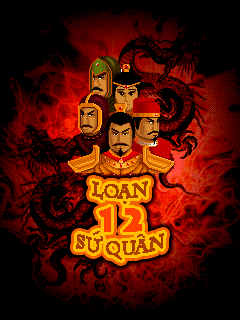

MICROGAME · 2010
Một thời loạn thế.
Ghép kiếm, dụng phép, thu phục 12 sứ quân trên bản Java ME nguyên gốc.
46MÀN CHƠI
09PHÉP THUẬT
03HỆ SỨC MẠNH
Ghép ≥3 ô để tấn công đối thủ
Tim · Bánh · Âm dương hồi máu, lương, phép
Nối ≥4 ô thêm lượt · đi sai mất lượt
PHIÊN BẢN NGUYÊN GỐC240 × 320

Bấm để bắt đầu cuộc hành trình
Đã tạm dừng
Tiến trình được lưu trên trình duyệt này.